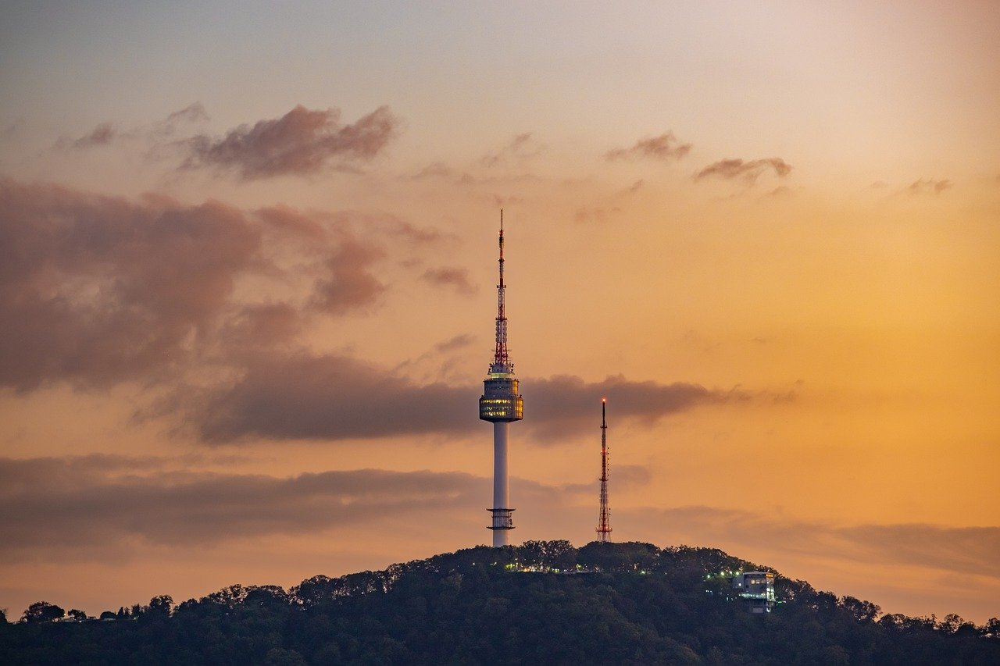
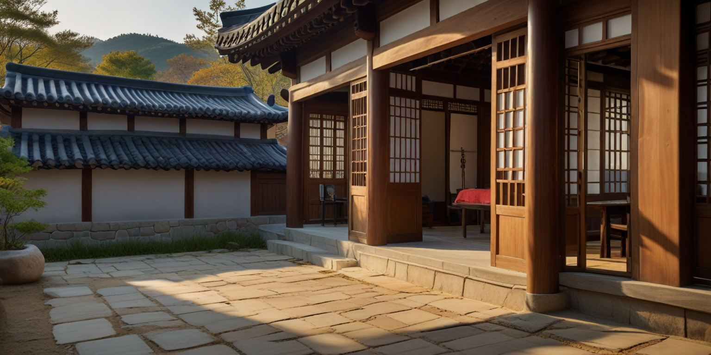

Le drapeau sud coréen aussi nommé Taegeuki symbolise le yin et yang (um yang en Corée) appelé Taegeuk et orné de quatre trigrammes du livre des mutations. Ils représentent l'air, la terre, le feu et l'eau. Le drapeau renvoie une idée d'harmonie universelle.
여러분 안녕하세요

La Corée du Sud, oficiellement appelé la republique de corée ou 대한민국 se situe en Asie de l'Est. Elle couvre la moitié sud de la péninsule coréenne et borde la Corée du nord le long de la zone coréenne démilitarisée. La Corée est le berceau de nouvelles tendances comme la K-POP et les drama qui se sont importé à l'internationale.
La Corée compte 52.2 millions d'habitants. La superficie totale est de 100 210 km² et la densité est de 516 habitants par km². Le PIB nominal est de 1 804,680 milliards de dollars.
La capitale de la Corée est Séoul ou se concentre la moitié de la population. D'autres villes sont aussi connu comme Busan et Incheon ou se trouve l'aéroport. L'ile la plus onnue est Jeju avec son parc peu commun.
La Corée du Sud est un pays avec de beaux paysages, une culture qui diffère des cultures europééenne. La gastronomie y st aussi très intéressante et présente des plats très originaux. Si vous souhaitez des informations sur l'organisation de votre voyage et les statut voyageur voici le lien de l'ambassade de Corée en France. Afin d'oganiser votre voyage en toute tranquillité vous retriuverez des informations sur le site de l'office du tourisme de Corée du sud.

La Corée du sud offre de grande possibilités de voyage.
Tout d'abord pour le logement, bien sur il existe plétor
de Airbnb. Si vous cherchez une option plus cheap de
logement mais très correcte il existe les auberges ou
vous dormirez dans un dortoir. Vous pourrez aussi
trouver des hôtels avec des prix plus élevés. Si vous
souhaitez vivre une immersion totale il existe les
maisons traditionnelles aussi appelé hanok. La dernière
option est le glamping, l'activité privilégié des
coréens. Vous trouverez baucoup d'endroit proposant du
glamping, un camping tout confort avec toilettes,
douche, cuisine et même des télé! Votre choix de
logement dépendra de vos critère mais aussi de votre
budget. Plusieurs site existe pour trouver le logement
parfait.